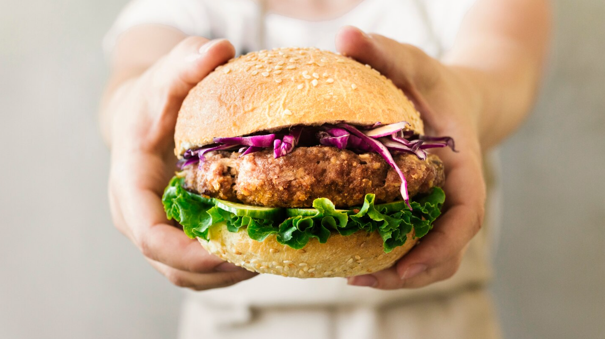

Receitas de Hamburguer
Hambúrguer Vegano Caseiro

Criado por: Chefe Paulo
Atualizada em: 04/10/2025
Um hambúrguer 100% vegetal, nutritivo e cheio de sabor. Feito com grão-de-bico e legumes, é uma excelente opção para quem busca uma refeição leve, saudável e sustentável.
Ingredientes do Hambúrguer
- 1 xícara (chá) de grão-de-bico cozido e escorrido
- 1/2 cenoura ralada
- 1/4 de cebola picada
- 1 dente de alho picado
- 2 colheres (sopa) de farinha de aveia (ou farinha de trigo integral)
- 1 colher (sopa) de azeite de oliva
- Sal e pimenta-do-reino a gosto
- Cheiro-verde picado
Ingredientes para montar
- Pães integrais ou tradicionais
- Folhas de alface e rodelas de tomate
- Fatias de abacate ou molho vegano de sua preferência
- Picles
Modo de preparo
- Em um processador, coloque o grão-de-bico, a cenoura, a cebola, o alho e o azeite.
- Bata até formar uma massa grossa. Adicione a farinha e os temperos e misture bem.
- Modele os hambúrgueres e leve para grelhar ou assar até ficarem douradinhos.
- Monte o lanche com os acompanhamentos desejados e sirva ainda quente.